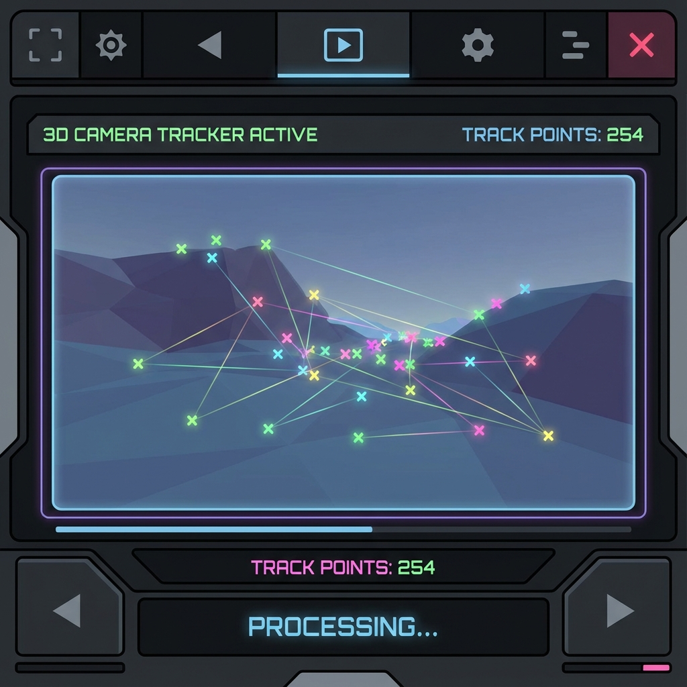
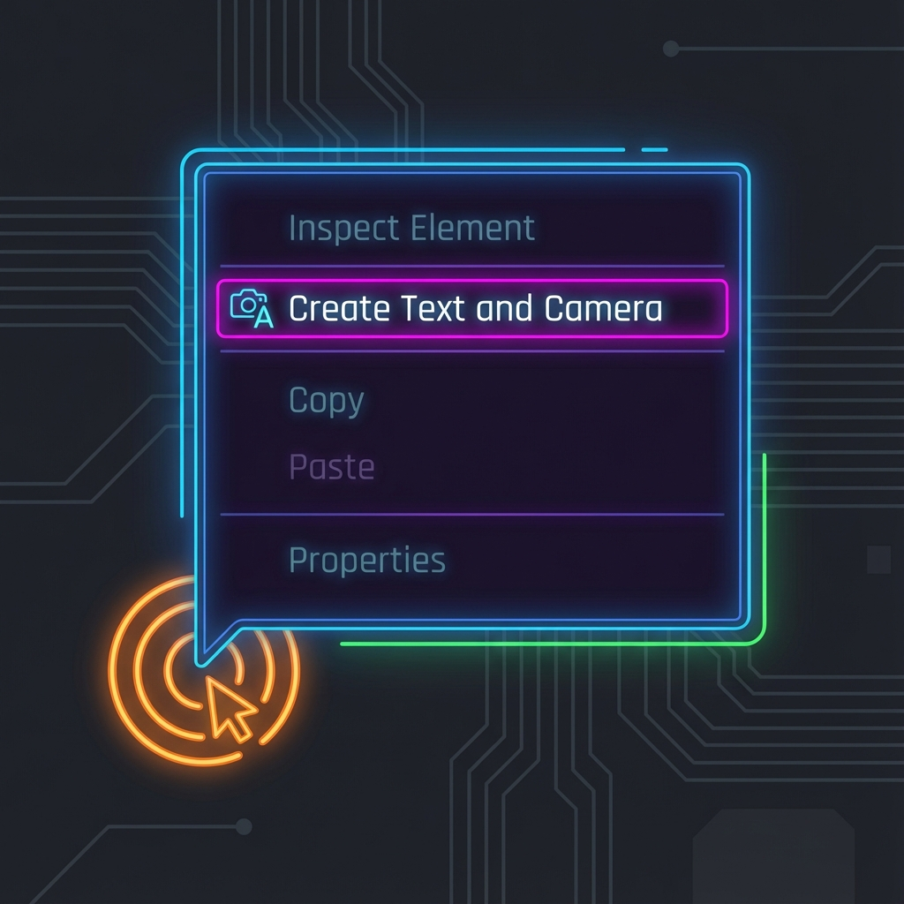
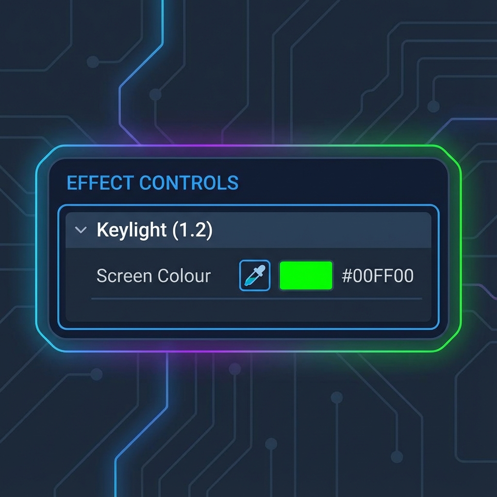

🎯 このミッションのゴール
「撮影した机の上に、CGの文字を置く」「緑の背景を透明にする」といった、よく見る映像マジックのタネ明かしです。 Aeの強力な機能（トラッキング）を使えば、自動でやってくれます。
🎥 トラッキング（3D Camera Tracker）
カメラの動きを解析して、映像の中に物体を固定します。
1カメラの動きを解析

- 実写映像（カメラが動いている素材）をタイムラインに入れます。
- レイヤーを右クリック → 「トラックとスタビライズ」 → 「3Dカメラトラック」を選びます。
- 解析が終わるまで待ちます（バックグラウンドで頑張ってくれてます）。
- 終わると、画面上にカラフルなポイント（×マーク）がいっぱい出ます！
2文字を配置

- 地面や壁など、物を置きたい場所のトラックポイントをいくつか選択します。
- 右クリックして「テキストとカメラを作成」を選びます。
- 空間に文字が張り付きました！再生すると、映像の動きにピッタリ追従します。
🟢 グリーンバック合成（Keylight）
緑の背景を透明にして、別の背景と合成します。
3色を抜く

- グリーンバック素材をタイムラインに入れます。
- 「エフェクト＆プリセット」パネルで「Keylight」と検索し、「Keylight (1.2)」を適用します。
- エフェクトコントロールパネルで、「Screen Colour」のスポイトを使って、画面の緑色をクリックします。
- 一瞬で背景が消えました！下に好きな背景画像を置いてみましょう。
🏁 Mission 5 クリア条件
✅ 実写映像の中に文字を自然に合成できた！
✅ グリーンバック素材の背景を消せた！